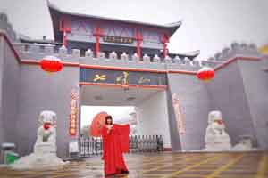
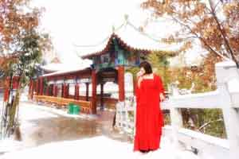
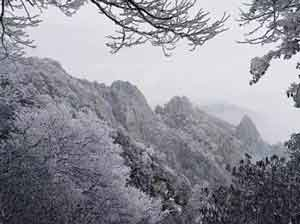
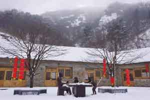
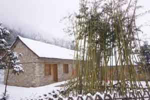
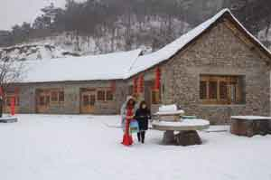
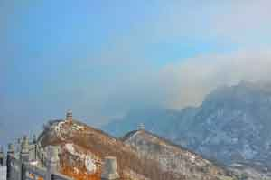
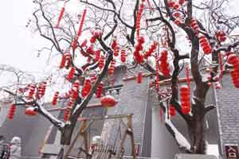
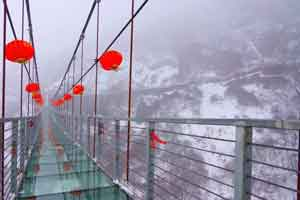

今日多地区都有降雪，翻开朋友圈也都是“雪景比美大赛”。
小编在翻朋友圈的时候都想说，若要比美，还是当属我大七峰山的雪景啊，来一组给老铁们感受下~ ~ ~

 
 
而七峰山滑雪场作为冬季景区的人气担当，从入冬以来就备受关注。这是为什么呢？ 一般来说滑雪一般都在海拔比较高的地方，所以往往需要几个小时的山路车程，一路上感受山路十八弯，自驾游车技不好的更是全程手心冒汗，跟团吧又不自由，那个痛苦只有经历过的人才能懂。
而七峰山滑雪场距离县城高速服务站仅仅30分钟，双向四车道旅游公路直达山门，雪场距离山门仅仅20分钟的车程。因为得天独厚的地理交通优势，加上雪场位于冬季依然风景如画的七峰山景区内，七峰山滑雪场被业内评为“中原最美滑雪场”，美，不仅是风景美，更是交通美，价位美，服务美。
 
 
拿景区前几日做的一期活动来看，2000张优惠券在线秒杀15分钟被抢光。火爆程度堪比某宝的双11了，活动结束后景区更是接到了很多留言和致电抱怨太快了还没反应过来已经被抢光，甚至还有留言投诉小编说没有短信提醒大家~哈哈，对此，小编内心是绝望的。争取多多跟老板反映多举办活动，但是下次，请一定时刻准备着哦。 那么,万众期待的七峰山滑雪场 到底什么时候和大家见面呢？